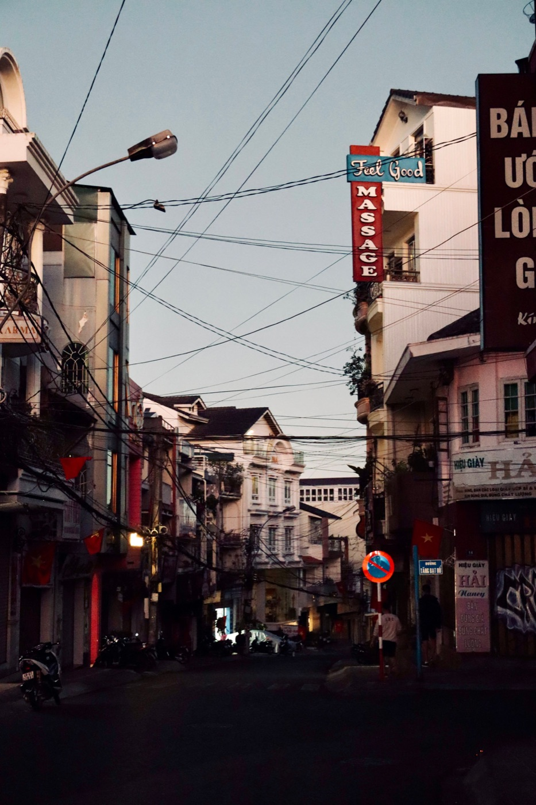
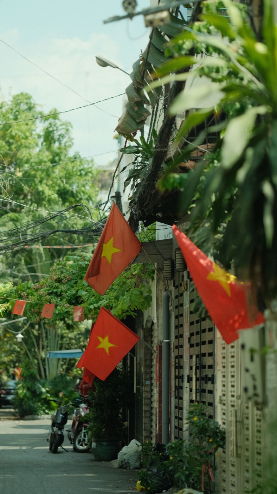

Как проезжать перекрёстки на байке во Вьетнаме

Перекрёсток требует больше внимания, чем прямой участок: машины и байки появляются сразу с нескольких направлений, а траектории участников могут пересекаться. Главная задача — заранее снизить скорость, показать своё намерение и двигаться предсказуемо, соблюдая сигналы и местные правила.
Подготовка начинается заранее
За несколько секунд до перекрёстка отпусти газ, оцени светофор, разметку, пешеходов и транспорт позади. Включи поворотник до манёвра, а не во время него. Выбери полосу и не пересекай поток по диагонали в последний момент. Если нужный поворот уже пропущен, безопаснее проехать дальше и перестроить маршрут.
Смотри шире
Не фиксируй взгляд на одном автомобиле. Проверяй встречный поток, боковые улицы, зеркала и пространство для выхода из перекрёстка. Особенно внимательно следи за машинами, которые могут повернуть через твою траекторию, и за байками, двигающимися рядом в слепой зоне.

Поворот направо
Снизь скорость до входа в поворот, проверь зеркало и коротко осмотри слепую зону. Пропусти пешеходов и не прижимайся вплотную к бордюру: там бывают песок, вода и припаркованные байки. В самом повороте держи газ ровно и не хватай резко передний тормоз с повёрнутым рулём.
Поворот налево
Заранее займи разрешённую позицию и покажи намерение. Не рассчитывай, что встречный водитель обязательно уступит только потому, что увидел поворотник. Начинай манёвр, когда траектория действительно свободна. На сложном широком перекрёстке новичку иногда безопаснее выполнить поворот в два этапа там, где это разрешено.
Круговое движение
До въезда снизь скорость и посмотри на знаки приоритета: схема может отличаться. Не врывайся в маленький промежуток. На круге держи выбранную траекторию без резких перестроений, показывай съезд поворотником и перед выходом проверяй зеркало и пространство сбоку.
Опасные привычки
- ускоряться на жёлтый сигнал, чтобы «успеть»;
- останавливаться посреди свободной траектории без причины;
- ехать рядом с автобусом или грузовиком в повороте;
- смотреть только на светофор и не замечать пешеходов;
- копировать манёвр другого байка, не проверив дорогу самому.
Короткий вывод
Перед перекрёстком снижай скорость, занимай понятную позицию и оставляй запас для чужой ошибки. Сначала изучи общую логику движения во Вьетнаме, а для уверенной остановки прочитай статью как правильно тормозить.